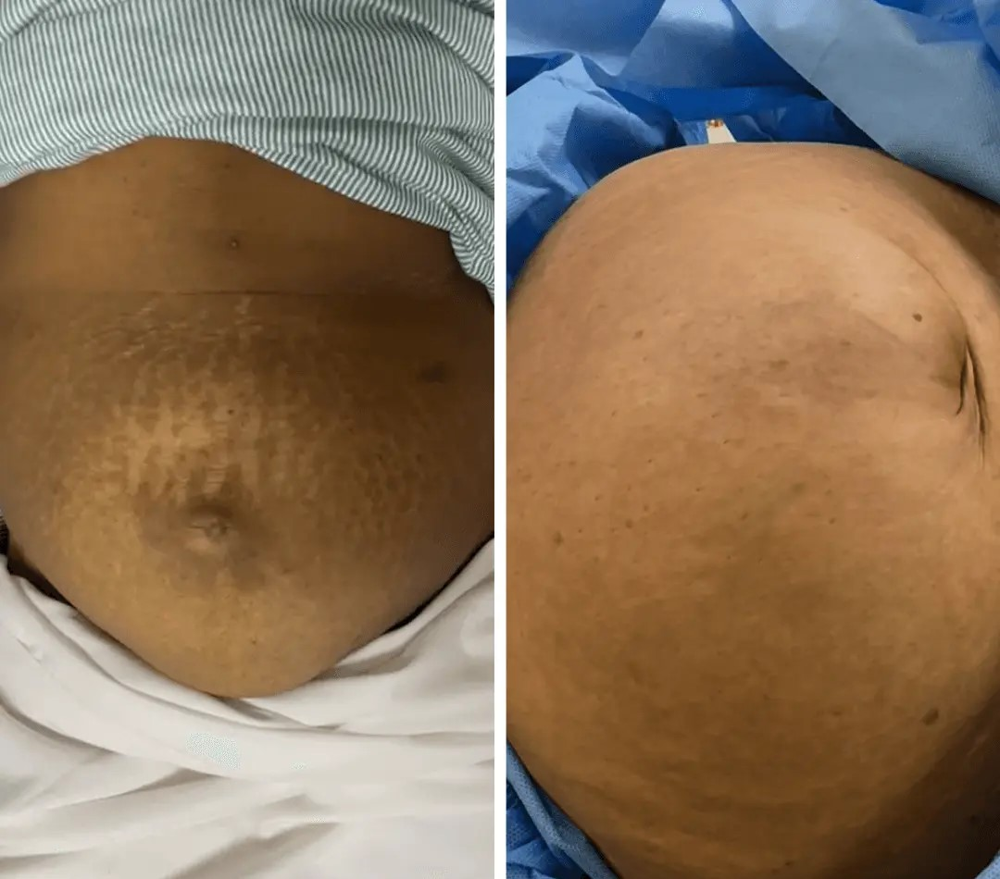
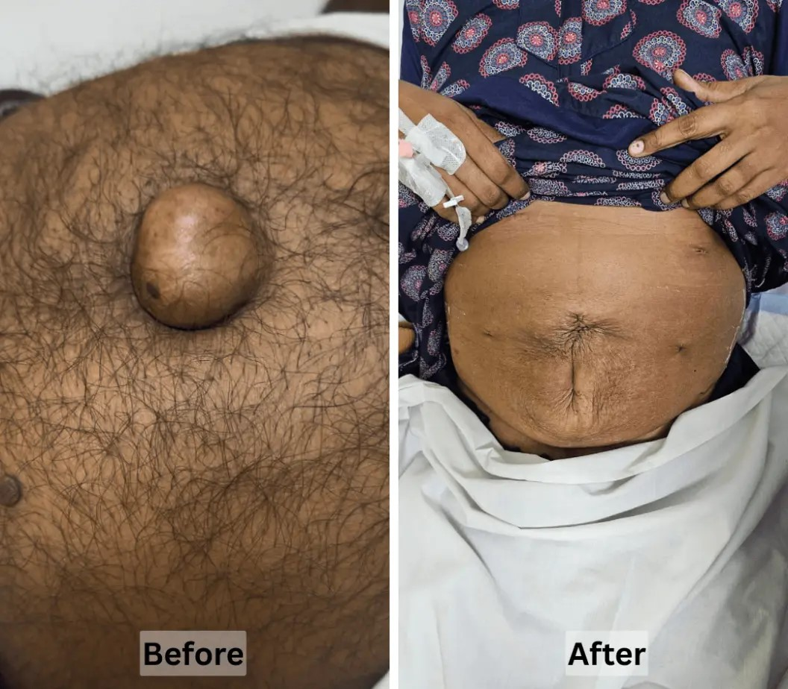
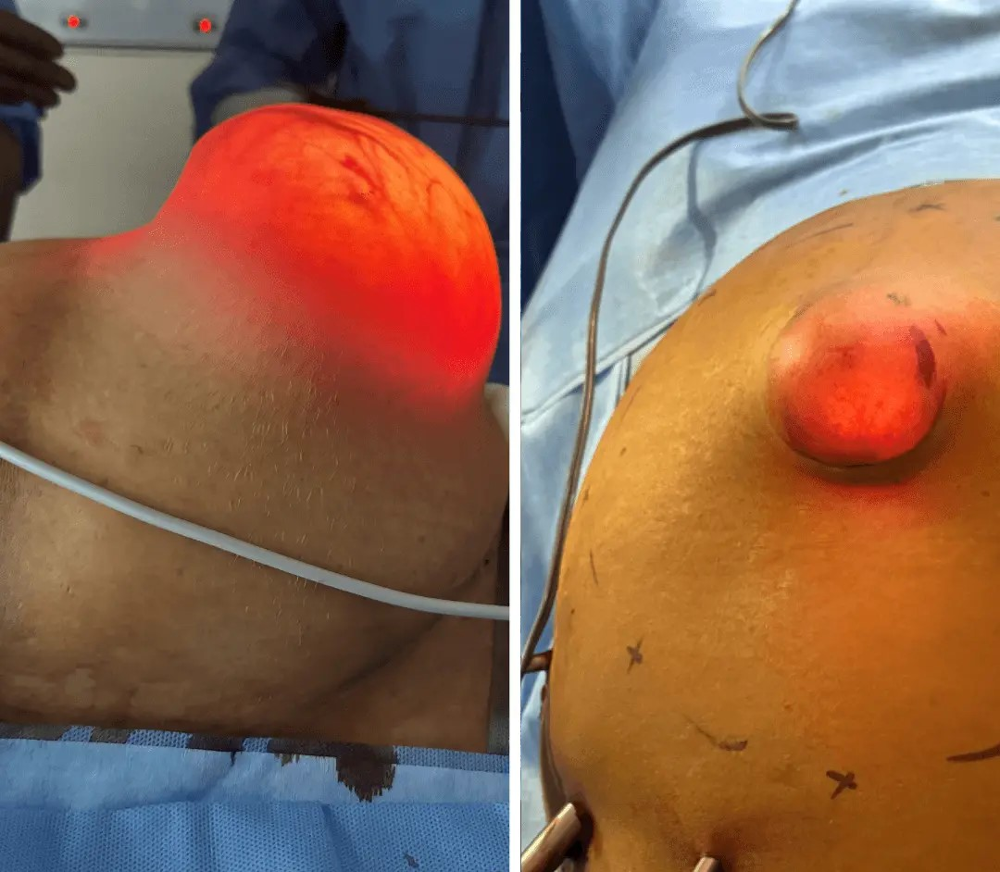

Inguinal Hernia
A bulge in the groin that grows with standing, coughing or lifting, more common in men.
Book for this →Inguinal, umbilical, incisional or hiatal hernia. Book a focused consultation with Dr. Preethi Mrinalini, advanced laparoscopic hernia repair surgeon.
Tap a hernia type to open a fresh consultation form and get to the right conversation faster.
A bulge in the groin that grows with standing, coughing or lifting, more common in men.
Book for this →A soft bulge at or near the belly button, common after pregnancy or weight gain.
Book for this →A bulge forming at the site of a previous surgical scar that keeps stretching.
Book for this →Chest burning, reflux or regurgitation caused by part of the stomach shifting upward.
Book for this →A firmer bulge in the upper thigh or groin that needs prompt surgical evaluation.
Book for this →A post-pregnancy abdominal gap and doming that does not close with exercise alone.
Book for this →A hernia that has come back after a previous repair and needs a specialist plan.
Book for this →Persistent groin strain or pain in athletes that does not settle with rest.
Book for this →This is not a diagnosis. It simply helps you decide whether a focused assessment is worth booking.
Tick what applies above to see whether an assessment is worth your time.
Book my consultationSee actual hernia repair outcomes from our patients.



A small bulge can quietly become daily stress when it is left unexplained.
A proper review turns vague worry into a precise next step you can act on.
Dr. Preethi brings specialist laparoscopic hernia repair training with a practical, patient-first consultation style.
The goal is clarity: what kind of hernia it is, whether it needs urgent repair, and what the right technique looks like for you.
"Patients deserve an honest explanation before they are asked to make a surgical decision."
Every part of the consultation is built to reduce confusion and help you understand your options.
Laparoscopic keyhole mesh repair with smaller incisions, less scarring and less discomfort.
Many patients are back to a normal routine within a couple of weeks, not months.
Your ultrasound and reports get a proper personal opinion, looked at directly by the surgeon.
A fresh, specialist perspective on advice you have already been given, with no pressure.
Many laparoscopic hernia repairs need just a single night, some as day-care.
A dedicated team helps you through cashless and reimbursement paperwork, including mesh cover.
From first contact to your consultation, the process stays simple, focused and clear.
Submit the form or message us on WhatsApp with your symptoms and concern.
Scans, ultrasound, prescriptions or previous consultation notes all reviewed together.
You understand the hernia, urgency and repair options before any decision is made.
"She explained exactly what kind of hernia I had and why it kept bulging. No pressure at all just honest guidance on mesh repair."
"Respectful conversation from start to finish. My scan was reviewed properly and both open and laparoscopic options were explained before deciding."
Support services are available around the visit: assessment, tests and next steps made easier.
Focused, unhurried hernia assessment with the surgeon.
On-campus lab collection ahead of pre-surgery protocols.
On-site scans to confirm hernia type and plan the repair.
An advanced minor OT and in-house pharmacy.
Share a few details and the team will call you to confirm the right slot and location.
Get clear answers about consultation, mesh, surgery decisions and what to expect next.
Not always. Some small, symptom-free hernias can be watched. The consultation tells you honestly whether surgery is needed now, can wait, or should be planned soon.
No. The consultation is about clarity, not persuasion. You'll hear the watch-and-wait or non-surgical options first, and surgery is discussed only when it is genuinely the right treatment.
A modern technique using small incisions, a camera and mesh placed from inside, which usually means less pain, minimal scarring and a faster recovery than open repair.
Absolutely. Bring your reports and previous advice — you'll get an honest, independent assessment with no obligation.
Modern mesh is considered safe and standard for most hernia repairs. Non-mesh options exist for specific cases and are discussed openly based on your situation.
Most medically indicated hernia repairs are covered. A dedicated team helps you with cashless approvals and reimbursement paperwork.
Many laparoscopic hernia repairs need only a day-care or single-night stay, with most people back to light routine within one to two weeks.
Any ultrasound, scans, blood reports or previous surgery discharge summaries you have. If you have nothing, that's fine the assessment starts from your symptoms.
Reserve your consultation with Dr. Preethi Mrinalini and finally get lasting relief from your hernia.
Book my consultation